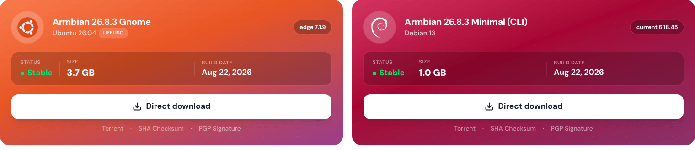
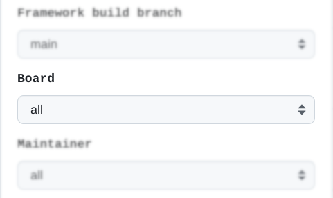
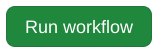
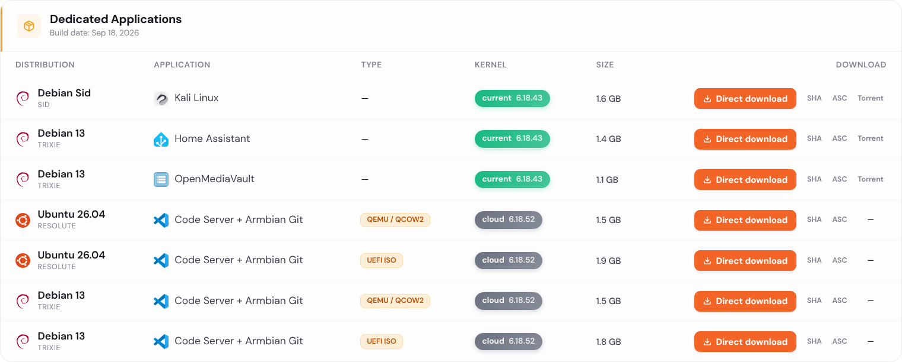
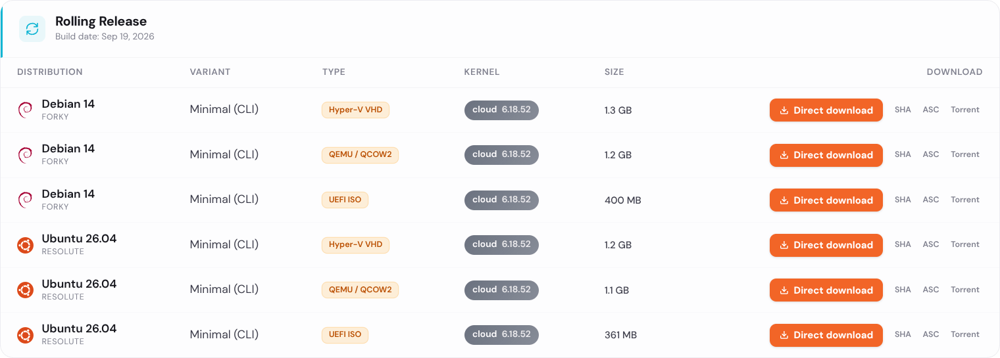

Release automation¶
Armbian’s release automation is split across four repositories. Knowing which one owns a given piece is most of the battle — nearly every change described on this page is a pull request against one of them.
| Repository | Owns |
|---|---|
armbian/build |
The build framework itself (compile.sh), board configs, kernel patches |
armbian/ci |
The build pipeline: every workflow that compiles artifacts and images |
armbian/armbian.github.io |
Build-list generation, repository publishing, mirrors, download pages |
armbian/os |
Third-party package definitions (external/*.conf) |
Note
Build workflows used to live in armbian/os and have moved to armbian/ci. The complete-artifact-matrix-*.yml files still present in armbian/os are superseded and no longer run. The repository itself is not retired — it remains the source of truth for third-party packages, and pull requests against external/ are still the way to add or update one.
Note
For monitoring Armbian action scripts status and execution details, visit https://actions.armbian.com/
Prepare build lists¶
Everything in this section is derived from image-info.json, which the build framework produces with ./compile.sh inventory-boards. Nothing here is hand-maintained except the files under Manual overrides.
Target generation¶
Build target YAML files are generated by generate_targets.py and committed to the data branch of armbian.github.io, which is served at github.armbian.com. Read them from there rather than from the branch — data/release-targets/x on the branch is https://github.armbian.com/release-targets/x on the web:
| Generated file | Consumed by | Schedule |
|---|---|---|
targets-release-standard-support.yaml |
build-standard-support.yml |
manual |
targets-release-apps.yaml |
build-apps.yml |
manual |
targets-release-nightly.yaml |
build-nightly.yml |
daily, 02:30 UTC |
targets-release-community-maintained.yaml |
build-community.yml |
weekly, Thursday 23:00 UTC |
Note
For changes to target generation logic, submit a PR against scripts/generate_targets.py.
Recommended images¶
Recommended images on the download pages and in Armbian imager come from a regular-expression mapping file, exposed.map, generated by the same script.
Example:
| Text Only | |
|---|---|
At most two patterns per board:
- Debian minimal, current branch.
- A second image chosen by hardware class — a desktop for boards with video, minimal for headless boards.
LoongArch is the exception and gets only the first pattern.
Tip
The Debian and Ubuntu codenames baked into each pattern are not fixed. They are taken from the codenames the YAML files were last generated with, and stable and community boards can be on different ones. Don’t hardcode a codename when reasoning about this file — when a board’s recommended image silently disappears from the website, a codename mismatch is the first thing to check.

Hardware-based board classification¶
Boards are classified by architecture and GPU capability to pick a desktop environment:
| Category | Condition | Desktop (nightly/community) |
|---|---|---|
| Fast HDMI | ARM64/x86 with video, not in the slow list | GNOME |
| Slow HDMI | 32-bit ARM, or a SoC in the slow list | XFCE |
| Headless | BOARD_HAS_VIDEO is false |
CLI only |
| RISC-V | ARCH = riscv64 |
XFCE |
| LoongArch | ARCH = loongarch64 |
CLI only |
Slow list (gets XFCE):
- 32-bit ARM (
arm,armhf) - Allwinner
sun50iw*,sun55iw*— H5/H6/H616 and relatives - Amlogic
meson-gxbb,meson-gxl,meson-g12a,meson-g12b,meson-sm1— S905X/S912/S905X2/S922X/A311D - Nuvoton MA35D1
- NXP i.MX93 — 2D-only Vivante GC520L, no usable OpenGL
- Nexell S5P6818 — Mali-400 is GLES2-only, below what Mutter requires
- Rockchip RK3328, RK3399, RK3399PRO
One board is classified individually rather than by family: mba62xx-tqma62xx (TI AM625 / PowerVR AXE-1-16M), where GNOME’s cross-GPU EGLImage sharing leaves the screen stuck on fbcon. Its larger sibling mba67xx-tqma67xx is unaffected.
Everything else with video is fast and gets GNOME.
Note
RISC-V desktop images are pinned to their own Ubuntu codename, independent of the general Ubuntu token, because the newest rootfs is periodically broken there. Application images skip armhf, riscv64 and loongarch64 entirely.
Automatic extensions¶
Fast HDMI boards automatically receive v4l2loopback-dkms (Video4Linux loopback device support).
Warning
mesa-vpu used to be added here as well. It has been retired — its responsibilities moved into armbian-config’s module_desktops, and the extension was removed from the build framework. Target files, scripts or notes still referring to it are stale.
Automatic extensions are merged with manual ones, never replaced.
Manual overrides¶
Override files live in release-targets/ on the main branch. Each of the four target lists has its own pair:
| File | Effect |
|---|---|
targets-release-<list>.blacklist |
Exclude boards from automatic generation |
targets-release-<list>.manual |
Add custom build targets |
where <list> is one of standard-support, apps, nightly, community-maintained.
Three further files tune the generator:
targets-extensions.map— add board-specific extensions.targets-extensions.map.blacklist— remove extensions from a board that would otherwise receive them.exposed.map.overrides.yaml— override the recommended-image patterns for a board or family whose recommended images sit off the algorithmic default, typically a vendor BSP.
Extension map format — note the double colon before ENABLE_EXTENSIONS, which is what the parser matches on:
| Text Only | |
|---|---|
One branch, several branches, and all branches:
| Text Only | |
|---|---|
Warning
A line without the literal ::ENABLE_EXTENSIONS= is skipped in silence — no warning, no error, the extension simply never appears. A single colon, or ENABLE_EXTENSIONS: instead of =, is enough to lose the entry.
Kernel descriptions for download pages¶
Each kernel branch can carry an optional description, generated by the generate-build-lists workflow and published to kernel-description.json.
Descriptions come from image-info.json via template-based categorisation (current/edge/legacy/vendor/custom), with version-appropriate naming and platform-specific optimisation details.
Testing¶
Target generation has no PR-stage testing. Only board-asset validation and labelling run on pull requests to armbian.github.io, so a change to generate_targets.py is first exercised when the generator next runs. Review it accordingly, and check the generated YAML on the data branch afterwards.
Prepare Standard Support images for release¶
Info
Manual execution is tied to the release manager role.
Run manually to produce:
- a set of images for a specific device
- a set of images for a specific maintainer
- a full set of stable release images (default)
Notes:
- this prepares images for release without pushing them to the download pages
- you can only generate images defined in
targets-release-standard-support.yaml - image generation workflows are compiled and are broadly identical, differing only in their defaults
1. Open the workflow and click¶
2. Select board¶

Bump version: trigger a system-wide version bump. Version override: set the version to release under.
Versioning is driven by GitHub releases on the target repository — there is no version file to edit. Stable builds reuse the newest X.Y.Z release unless versionOverride is set; use the override to seed a release or select a different version. Nightly builds pick the newest <base>-trunk.N release and bump N.
3. Run workflow¶

(Around 15 minutes. Network problems can stretch this to hours.)
Images land in the incoming folder at https://fi.mirror.armbian.de/incoming/ under your GitHub username. Once you have confirmed they work, notify @igorpecovnik to move them to the official download pages. Automation then refreshes the download index within 15–30 minutes.
The download pages and Armbian imager read the same data source — armbian-images.json, rebuilt by that refresh — so an image that reaches the download pages is available in the imager as well, with no separate publishing step. Whether it is offered as a recommended image depends on matching an exposed.map pattern.
Additional options¶
Several images are produced per hardware target and sorted automatically into:
- Desktop releases
- Server and IoT releases
- Dedicated applications
Customisable:
- Framework build branch —
main(trunk) orvXX.X(previous stable release) - Bump version (system-wide)
- Version override
- Board (one board only)
- Maintainer (one maintainer’s boards)
Prepare application images for release (release manager)¶
Run manually to produce:
- a set of application images for a specific device
- a set of application images for a specific maintainer
- a full set of application images (default)
Notes:
- application images are released 10–15 minutes after the build finishes successfully
- you can only generate applications defined in
targets-release-apps.yaml armhf,riscv64andloongarch64boards are excluded from application images
1. Open the apps workflow and click¶
2. Select application¶
Version override: use this to keep images under the same version, but never lower than the last release.
3. Run the apps workflow¶
(Around 15 minutes. Network problems can stretch this to hours.)
Images are hosted at https://github.com/armbian/distribution/releases and released all at once. Download pages refresh within 15–30 minutes of a successful run.

Additional options¶
The same set as standard support: framework build branch, bump version, version override, board, maintainer.
Repository update (cronjob/release manager)¶
Pulls packages from the build framework’s OCI artifact cache on GitHub and from third-party repositories (Chrome, Chromium, Code, Discord, Thunderbird, Firefox, …) and pushes them to:
apt.armbian.com— only new packages are addedbeta.armbian.com— the whole repository is recreated from scratch
It runs automatically when artifact generation completes, and can be started manually by a release manager.
Inputs¶
| Input | Default | Effect |
|---|---|---|
download_external |
true | Mirror third-party packages. Turn off to republish Armbian’s own packages only. |
purge_external |
true | Purge old third-party package versions before downloading. |
The third-party download fans out across four chunks, each filtering the matrix to index % 4, because a single strategy.matrix is capped at 256 entries by GitHub.
1. Open the repository workflow and click¶
2. Run the repository workflow¶
(Around 60 minutes.)
Third-party packages¶
Third-party sources are defined one file per package in external/*.conf in armbian/os, and mirrored by the Sync 3rd party packages workflow. To add or update one, submit a PR against that directory; a verification workflow runs on the pull request.
Each .conf sets at least the upstream URL, the suite KEY, the METHOD (aptly for a Debian repository, gh for GitHub release assets, direct for a single URL), the target RELEASE and ARCH lists, and a GLOB filter. A file renamed to *.conf.disabled is skipped.
Build all artifacts (cronjob)¶
The build-all workflow generates the artifact cache for every target in targets-all-not-eos.yaml. It runs every two hours overnight plus at 08:00 and 14:00 UTC, and can be run manually.
This pre-populates the cache that image builds consume. Image workflows still build any artifact they need that is missing, in the same run, so a cold cache slows a build down rather than breaking it.
A companion build-all-stable workflow rebuilds the stable branch every Monday at 18:00 UTC and auto-bumps the patch version.
Build Rolling Release images (cronjob)¶
The build-nightly workflow generates the nightly (Rolling Release) images in targets-release-nightly.yaml, daily at 02:30 UTC, and can be run manually.
Download pages refresh automatically after a successful build.

Build community-maintained images (cronjob)¶
The build-community workflow builds CSC/TVB boards from targets-release-community-maintained.yaml, weekly on Thursdays at 23:00 UTC. These images carry a community_ filename prefix.
Build artifacts for a pull request (admin/PR)¶
Builds the artifacts for the code in a pull request. It starts when the PR’s label is set to Build, and requires administrator privileges.